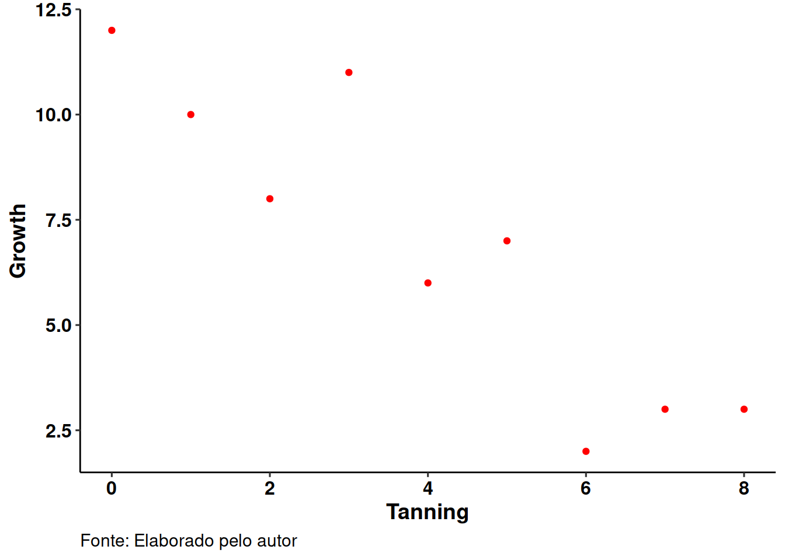

| growth | tannin |
|---|---|
| 12 | 0 |
| 10 | 1 |
| 8 | 2 |
| 11 | 3 |
| 6 | 4 |
| 7 | 5 |
| 2 | 6 |
| 3 | 7 |
| 3 | 8 |
Regressão Linear
Modelagem Estatística
Modelagem Estatística é um dos aspectos mais importantes ao se lidar com dados; é um tipo de sumário dos dados.
Um sumário pode ser uma maneira de se encapsular alguns padrões dos dados. Através da modelagem estatística capturamos tendências e comportamentos presentes nos dados, condensamos toda a informação dos dados para lidarmos mais facilmente ela.
O modelo estatístico difere do modelo matemático. Enquanto este é derivado apenas de fórmulas, conceitos e manipulações matemáticas, o modelo estatístico é baseado nos dados.
Nesta Trilha abordaremos a Modelagem Estatística, específicamente a Regressão Linear e a Análise de Variância.
Começamos com uma apresentação mais cuidadosa do tema Modelagem Estatística, passamos em seguida a Regressão Linear (Modelos Lineares) e finalizamos com Análise de Variância.
Serão apresentados exemplos de códigos em R, tanto para os cálculos manuais como utilizando as funções disponíveis no software.
A parte mais difícil de qualquer trabalho estatístico é … começar! E uma das coisas mais difíceis quando se começa é a escolha do tipo correto de análise estatística. A escolha depende:
- da natureza dos dados
- da questão que se quer responder, entre outras coisas.
A chave é entender que tipo de variável resposta você tem e saber a natureza de suas variáveis explicativas.
- A variável resposta é a coisa com a qual você está trabalhando:
- é a variável cuja variação você está tentando entender!
- é a variável que vai no eixo y do gráfico.
- A variável explicativa vai no eixo x do gráfico.
- você está interessado na extensão em que a variação da variável resposta está associada com a variação da variável explicativa.
Você também precisa considerar o modo que as variáveis na sua análise medem o que elas se propõe a medir. Uma medida contínua é uma variável do tipo altura ou peso que pode assumir valores com números reais.
Uma variável categórica é um fator com dois ou mais níveis:
- sexo é um fator com dois níveis (masculino e feminino)
- cor pode ser um fator com sete níveis (vermelho, laranja, amarelo, verde, azul, índigo e violeta)
Portanto, é essencial responder às seguintes questões:
- Qual das variáveis é a variável resposta?
- Quais são as variáveis explicativas?
- As variáveis explicativas são contínuas ou categóricas, ou uma mistura de ambas?
- Que tipo de variável resposta temos:
- é uma medida contínua? uma contagem? uma proporção? um tempo (ocasião) de morte? ou uma categoria?
Método Estatístico Apropriado
Algumas chaves simples para a escolha do método estatístico apropriado
As variáveis explicativas
- Todas as variáveis explicativas são contínuas \(\Rightarrow\) Regressão
- Todas as variáveis explicativas são categóricas \(\Rightarrow\) Análise de Variância (ANOVA)
- Variáveis explicativas são tanto contínuas como categóricas \(\Rightarrow\) Análise de Covariância (ANCOVA)
A variável resposta
- Contínua \(\Rightarrow\) Regressão Normal, ANOVA ou ANCOVA
- Proporção \(\Rightarrow\) Regressão Logística
- Contagem \(\Rightarrow\) Modelos log-linear
- Binária \(\Rightarrow\) Análise logística binária
- Tempo na morte \(\Rightarrow\) Análise de sobrevivência
Objetivo da Modelagem Estatística
O objetivo da modelagem é determinar os valores dos parâmetros em um modelo específico que levam ao melhor ajuste do modelo aos dados Os dados são sacrosantos; eles nos dizem o que realmente aconteceu sob determinadas circunstâncias.
- É um erro comum dizer “os dados foram ajustados ao modelo” como se os dados fossem flexíveis, e nós tivéssemos uma estrutura clara do modelo.
- É o contrário: o que se procura é o modelo mínimo adequado que descreva os dados.
- O modelo é ajustado aos dados; não o contrário!
O melhor modelo é o que produz o mínimo de variação não explicada (o mínimo desvio dos resíduos), sujeito à restrição de que todos os parâmetros no modelo devem ser estatisticamente significantes
Especificando o modelo
Um modelo incorpora nosso entendimento mecanicista das variáveis explicativas envolvidas, e da maneira que elas estão relacionadas com a variável resposta.
Buscamos um modelo mínimo por conta do princípio da parcimônia, e também um modelo adequado
- não há sentido em ter um modelo inadequado, que não descreve uma fração significante da variação dos dados.
É muito importante entender que não há um modelo:
- em muitos casos, haverá um grande número de modelos diferentes, uns mais plausíveis do que outros, que podem ser ajustados a qualquer conjunto de dados.
É preciso determinar quais, se algum, dos modelos possíveis são adequados:
- e depois, dos adequados, qual é o modelo mínimo adequado.
- pode haver um conjunto de modelos que descrevem os dados igualmente bem (ou igualmente probremente se a variabilidade é grande)
Primeiros passos
Um erro muito comum é tentar fazer a modelagem estatística direto. A melhor coisa a fazer é gastar um tempo substancial, logo de início, para entender os dados e o que eles mostram.
- Isto vai ajudar a guiar o pensamento para a modelagem estatística mais apropriada.
Checklist da Modelagem Estatística
- Certificar-se de que o dataframe está correto em estrutura e conteúdo:
- Todos os valores de cada variável estão na mesma coluna?
- Todos os zeros são realmente 0 ou deveriam ser
NA? - Cada linha contém o mesmo número de entradas?
- Existe algum nome de variável que contém espaço?
- Depois de carregar os dados:
- Examine a estrutura com
stre certifique-se de as classes e tipos das variáveis estão corretos. - Olhe no
heade notaildos dados e verifique possíveis erros. - Plote cada variável individualmente para verificar erros mais grosseiros (
plot(x),plot(y),boxplot, etc) - Veja os relacionamentos entre as variáveis (use
tapply,plot,treeegam)
- Examine a estrutura com
\(\Rightarrow\) Ou seja, explore os dados primeiro!
Sobre o Modelo
Pense sobre a escolha do modelo:
- Quais variáveis explicativas deveriam ser incluídas?
- Que transformação da resposta é mais apropriada?
- Que interações deveriam ser incluídas?
- Quais termos não lineares deveriam ser incluídos?
- Há alguma pseudo-replicação, e se houver, como se deve lidar com isso?
- As variáveis explicativas deveriam ser transformadas?
Tente utilizar o tipo mais simples de análise que seja apropriado para seus dados e para a questão que está tentando responder:
- Faça uma ANOVA one-way ao invés de um modelo de efeitos mistos
Ajuste um modelo máximo e vá simplificando-o paulatinamente ao remover parâmetros
Verifique o modelo mínimo adequado em termos de constância de variância e normalidade dos erros utilizando plot(model)
Enfatize os tamanhos dos efeitos e erros padrões (summary.lm) e analise a tabela de desvios (summary.aov)
Por fim, documente tudo o que fizer, e explique cada um dos passos. Desta maneira você entenderá o que fez e porque fez quando retornar à sua análise 6 meses mais tarde!
Máxima Verosimilhança – Maximum lilkelihood
O que, exatamente, queremos dizer quando afirmamos que os valores dos parâmetros devem dar conta do melhor ajuste do modelo aos dados ?
A convenção utilizada é que nossas técnicas devem levar a estimadores que minimizem a variância e sejam livres de viés.
Nós definimos melhor em termos da “máxima verosimilhança”.
Uma definição funcional para estes termos é:
- Dados os dados,
- e dada nossa escolha do modelo,
- quais valores dos parâmetros deste modelo
- farão os dados observados mais prováveis?
Julgamos o modelo com base em quão prováveis os dados seriam se o modelo estivesse correto!
Regressão Linear
Análise de Regressão
A Análise de Regressão é utilizada para se explicar ou modelar o relacionamento entre uma única variável \(Y\), chamada de variável resposta, de saída ou dependente e uma ou mais variáveis preditoras, de entrada ou explicativas, \(X_1, X_2, ..., X_p\).
Quando \(p = 1\), é chamada regressão simples
Quando \(p > 1\) é chamada regressão múltipla ou algumas vezes, regressão multivariada.
A variável resposta deve ser uma variável contínua
As variáveis explicativas podem ser contínuas, discretas ou categóricas.
A Análise de Regressão tem vários possíveis objetivos, incluindo:
- Predição de observações futuras
- Avaliação do efeito de, ou do relacionamento entre, as variáveis explicativas sobre a resposta
- Uma descrição geral da estrutura dos dados
História
Problemas do tipo regressão foram abordados primeiramente no século 18, e estavam relacionados ao uso da astronomia na navegação (@farawayLMR2014).
Legendre desenvolveu o método dos mínimos quadrados em 1805.
Gauss disse que o tinha desenvolvido alguns anos antes e mostrou, em 1809, que os mínimos quadrados eram a solução ótima quando os erros tem uma distribuição normal.
A metodologia ficou restrita às ciências físicas até a parte final do século 19, quando em 1875, Francis Galton cunhou o termo regressão à mediocridade (@galton).
Modelo Linear
Um modelo linear entre duas variáveis \(X\) e \(Y\), é definido matematicamente como uma equação com dois parâmetros desconhecidos (@peck-IntroStat),
\[ y = b_0 + b_1x \] que é uma estimativa da linha de regressão verdadeira da população:
\[\mu_y = \beta_0 + \beta_1 x\]
Esta linha de regressão descreve como a resposta média \(\mu_y\) muda com \(x\).
Os valores observados para \(y\) variam em torno da sua média \(\mu_y\) e assumimos que tem o mesmo desvio padrão \(\sigma\).
Os valores ajustados \(b_0\) e \(b_1\) estimam o verdadeiro deslocamento (intercept) e a inclinação da linha de regressão da população.
Para fins de simplificação, indicamos \(Y \equiv \mu_y\) na fórmula:
\[ Y = \beta_0 + \beta_1 X \]
Assim, dados \(n\) pares de valores, \((X_1, Y_1), (X_2, Y_2), \ldots, (X_n, Y_n)\), se for admitido que \(Y\) é função linear de \(X\), pode-se estabelecer uma regressão linear simples, cujo modelo estatístico é
\[ Y_i = \beta_0 + \beta_1 X_i + e_i, \quad i = 1, 2, \ldots, n \]
Ajustando um modelo linear
Como através de uma amostra obtemos uma estimativa da verdadeira equação de regressão, denominamos
\[\hat{Y}_i = \hat{\beta}_0 + \hat{\beta}_1 X_i \]
ou seja, \(\hat{Y}_i\) é o valor estimado de \(Y_i\), através das estimativas de \(\beta_0\) e \(\beta_1\), que chamaremos de \(\hat{\beta}_0\) e \(\hat{\beta}_1\). Para cada valor de \(Y_i\), temos um valor \(\hat{Y}_i\) estimado pela equação de regressão,
\[Y_i = \hat{Y}_i + e_i \]
Ou seja, podemos expressar o modelo como: DADOS = AJUSTE + RESÍDUO, onde o termo AJUSTE representa a expressão \(\beta_0 + \beta_1 X\).
Portanto, o resíduo (ou desvio) de cada observação em relação ao modelo adotado será
\[\begin{array}{lll} e_i & = & Y_i - \hat{Y}_i \\ e_i & = & Y_i - (\hat{\beta_0 }+ \hat{\beta_1} X_i) \end{array} \]
Ajustando um modelo linear – primeira abordagem
Como parte das hipóteses da Regressão Linear, consideramos que os resíduos possuem uma distribuição normal com média zero e variância constante, ou seja, \(e_i \sim \text{N}(0, \sigma^2)\).
A solução de mínimos quadrados vai determinar \(\hat{\beta_0}\) e \(\hat{\beta_1}\) que minimizam a soma dos quadrados dos resíduos (residuals sum of squares – RSS):
\[\begin{array}{lll} \\ RSS & = & \sum_{i=1}^n(Y_i - \hat{Y_i})^2 \\ & = & \sum_{i=1}^n[y_i - (\beta_0 + \beta_1 x_i)]^2 \\ & = & \sum e_i^2 \\ & = & E \equiv E_2(\beta_0,\beta_1) \end{array} \]
Como se trata de uma função de duas variáveis, no processo de encontrar os pontos de mínimos, utilizamos derivadas de primeira ordem e as igualamos a zero:
\[\frac{\partial E}{\partial \beta_0} = 0 \;\; \mbox { e }\;\; \frac{\partial E}{\beta_1} = 0\] Expandindo as equações acima teremos: \[0 = \frac{\partial }{\partial \beta_0}\sum_{i=1}^n[y_i - (\beta_0 + \beta_1 x_i)]^2 = 2 \sum_{i=1}^n(y_i - \beta_1x_i - \beta_0)(-1)\] e \[0 = \frac{\partial }{\partial \beta_0}\sum_{i=1}^n[y_i - (\beta_0 + \beta_1 x_i)]^2 = 2 \sum_{i=1}^n(y_i - \beta_1x_i - \beta_0)(-x_i)\] Simplificando estas duas equações, chegamos a um sistema com duas equações e duas incógnitas, que resulta nas seguintes expressões para estimar os parâmetros \(\beta_0\) e \(\beta_1\):
\[\begin{array}{lll} \hat{\beta}_1 & = & \frac{\sum_{i=1}^{n} X_iY_i - \frac{\sum_{i=1}^{n} X_i \sum_{i=1}^{n} Y_i}{n}}{\sum_{i=1}^{n}X_i^2 - \frac{(\sum_{i=1}^{n} X_i)^2}{n}} \\ & & \\ \hat{\beta}_1 & = & \frac{n\sum_{i=1}^{n} X_iY_i - \sum_{i=1}^{n} X_i \sum_{i=1}^{n} Y_i}{n\sum_{i=1}^{n}X_i^2 - (\sum_{i=1}^{n} X_i)^2} \\ & & \\ \hat{\beta}_0 & = & \frac{\sum_{i=1}^nX_i^2\sum_{i=1}^nY_i - \sum_{i=1}^nX_iY_i\sum_{i=1}^nX_i}{n\sum_{i=1}^{n}X_i^2 - (\sum_{i=1}^{n} X_i)^2} \\ & & \\ \hat{\beta}_0 & = & \bar{Y} - \hat{\beta}_1 \bar{X} \end{array} \]
onde
\[ \begin{aligned} \bar{Y} & = \frac{1}{n} \sum_{i=1}^{n} Y_i \qquad \text{e} \qquad \\ \bar{X} & = \frac{1}{n} \sum_{i=1}^{n} X_i \end{aligned} \]
O processo envolve a determinação dos seguintes valores (juntamente com o RSS acima), conhecidos como os “famosos cinco no R”:
- \(\sum Y_i^2\)
- \(\sum Y_i\)
- \(\sum X_i^2\)
- \(\sum X_i\)
- \(\sum X_iY_i\)
Somas corrigidas dos quadrados e soma dos produtos
Depois dos famosos cinco, vamos calcular três somas essenciais “corrigidas”.
\[SSX = \sum x^2 - \frac{(\sum x)^2}{n}\]
\[SSY = \sum y^2 - \frac{(\sum y)^2}{n}\]
O terceiro termo é a soma corrigida dos produtos, \(SSXY\).
\[SSXY = \sum xy - \frac{(\sum x)(\sum y)}{n} \]
Somas corrigidas – evitando erros de arredondamento
As expressões para os cálculos das somas corrigidas e soma dos produtos envolvem cálculos computacionais potencialmente perigosos em termos de precisão.
Subtrações de valores grandes podem gerar erros de arredondamento consideráveis.
Para evitar isso, podemos utilizar as seguintes fórmulas equivalentes:
\[SSY = \sum(y - \bar{y})^2\] \[SSX = \sum(x - \bar{x})^2\] \[SSXY = \sum(y - \bar{y})(x - \bar{x})\]
Calculando os parâmetros
Os parâmetros do modelo (\(y = b_0 + b_1x\)) podem ser determinados com os valores anteriores:
\[b_1 = \frac{SSXY}{SSX}\]
Uma parte da definição do melhor ajuste da linha reta é que ela passa através do ponto (\(\bar{x},\bar{y}\)), determinado pelos valores médios de \(x\) e \(y\).
Como sabemos que \(y = b_0 + b_1x\), então também temos que \(\bar{y} = b_0 + b_1\bar{x}\).
Assim:
\[b_0 = \bar{y} - b_1\bar{x} = \frac{\sum y}{n} - b_1\frac{\sum x}{n}\]
Incertezas nas estimativas dos parâmetros
Erro padrão na inclinação
A incerteza na inclinação estimada aumenta com o aumento da variância e diminui com o aumento do número de pontos no gráfico.
Além disso, a incerteza é maior quando a faixa de valores de \(x\) (conforme medida por SSX) é pequena:
\[se_{b_1} = \sqrt{\frac{MSE}{SSX}}\]
Erro padrão do deslocamento
A incerteza do deslocamento estimado tem o mesmo comportamento da incerteza na inclinação com relação à variância, ao número de pontos e à faixa de valores de \(x\).
Além disso, ela também aumenta com o quadrado da distância entre a origem e o valor médio de \(x\) (conforme medido por \(\sum x^2\)):
\[se_{b_0} = \sqrt{\frac{MSE\sum x^2}{n \times SSX}}\]
Verificando o ajuste do Modelo Linear – \(R^2\)
Depois de ajustado um modelo linear, podemos nos perguntar “O quão bem ele ajusta os dados?
Uma medida deste ajuste é o \(R^2\):
- Coeficiente de determinação ou percentual da variância explicada
\[R^2 = 1 - \frac{\sum(\hat{y}_i - y_i)^2}{\sum(y_i - \bar{y})^2} = 1 - \frac{\mbox{RSS}}{\mbox{SSY}} \]
onde:
- RSS: residual sum of squares (soma dos quadrados dos resíduos)
- SSY: sum of squares of response variable (soma dos quadrados de \(y\))
A faixa de \(R^2\) é: \(0 \leq R^2 \leq 1\) + Valores próximos a 1 indicam melhor ajuste. + Para regressão linear simples, \(R^2 = r^2\), onde \(r\) é a correlação entre \(x\) e \(y\). + Esta definição de \(R^2\) só faz sentido se o modelo tem um deslocamento.
O \(R\)-quadrado obtido desta forma é chamado de \(R^2\) múltiplo – que é a fração da variância total explicada pelo modelo.
Há um outro \(R\)-quadrado que é o R-quadrado ajustado, cujo valor é muito próximo, mas tem uma definição um pouco diferente.
Ao invés de ser baseado na soma dos quadrados dos resíduos (RSS) explicados e na soma total dos quadrados do modelo SSY, ele é baseado na variância global, dada por: \[s^2_T = \frac{SSY}{(n-1)}\]
e na variância do erro, \(s^2\) – chamada de “Erro quadrado médio” (MSE), dado por: \[\sum(y_i - \hat{y_i})^2/(n-2) = RSS/DFE\]
onde DFE é o número de graus de liberdade no cálculo do erro (\(n-2\))
Assim, o \(R^2\) ajustado será dado por:
\[R^2_{ajustado} = \frac{s^2_T - s^2}{s^2_T}\] \[R^2_{ajustado} = \frac{\frac{SSY}{(n-1)} - MSE}{\frac{SSY}{(n-1)}}\]
Outra maneira de se calcular o R quadrado ajustado é pela expressão: \[R^2_{ajustado} = 1 - \left[\frac{(1 - R^2)(n - 1)}{n - k - 1} \right]\] onde:
- \(n\) é o número de pontos nos dados da amostra;
- \(k\) é o número de regressores independentes, i.e., o número de variáveis no modelo, excluindo a constantae.
Significado do \(R^2\) ajustado
Como vimos, tanto o \(R^2\) como o \(R^2_{ajustado}\) nos dão uma ideia de quantos pontos de dados caem dentro da equação de regressão. Contudo, há uma diferença principal entre o \(R^2\) e o \(R^2_{ajustado}\): o \(R^2\) assume que cada variável explicativa explica a variação na variável dependente. O \(R^2_{ajustado}\) nos diz o percentual de variação explicada somente pelas variáveis independentes que realmente afetam a variável dependente.
Problemas com o \(R^2\) que são corrigidos pelo \(R^2_{ajustado}\)
- O \(R^2\) aumenta com cada preditora adicionada a um modelo. Como o \(R^2\) sempre aumenta e nunca diminui, pode parecer que se tem um modelo melhor conforme se aumenta o número de termos adicionados ao modelo. Isto pode ser completamente equivocado.
- De modo similar, se o modelo tem muitos termos e muitos polinômios de alta ordem, pode-se cair no problema de over-fitting dos dados. Quando se tem o over-fitting de dados, um valor muito alto de \(R^2\) pode levar a projeções equivocadas.
Análise de Variância para Regressão Linear
Para avaliar a significância do modelo, realizamos uma Análise de Variância (ANOVA) para a regressão. Esta análise visa avaliar se o modelo obtido (\(\beta_0 \mbox{ e } \beta_1\)) é estatisticamente diferente do modelo nulo, ou seja, o modelo onde o coeficiente \(\beta_1\), que dá a inclinação da reta, seja nulo.
Como vimos na estimação dos parâmetros, o objetivo é encontrar parâmetros que façam com que a soma de quadrados dos resíduos seja mínima.
O conceito básico da regressão é DADOS = AJUSTE + RESÍDUOS, que podemos escrever como: \[ (y_i - \bar{y}) = (\hat{y_i} - \bar{y}) + (y_i - \hat{y_i})\] O primeiro termo é a variação total na variável resposta \(y\), o segundo termo é a variação na resposta média e o terceiro termo é o valor residual.
Se um modelo é bem ajustado, esperamos que a soma de quadrados do modelo seja grande e que a soma de quadrados dos resíduos seja mínima.
Elevando ao quadrado e adicionando os termos para as \(n\) observações temos:
\[\sum(y_i - \bar{y})^2 = \sum(\hat{y_i} - \bar{y})^2 + \sum(y_i - \hat{y_i})^2\]
Podemos particionar a soma de quadrados da seguinte forma:
\[SST = SSM + RSS \]
SS é soma dos quadrados e T, M e R são: total, modelo e resíduos, respectivamente.
A variância da amostra \(s_y^2\) é \(\sum(y_i - \bar{y})^2/(n-1) = SST/DFT\), ou seja, a soma total dos quadrados dividida pelo total de graus de liberdade (DFT).
Para regressão linear simples, a MSM (média quadrada do modelo) é \(\sum(\hat{y_i} - \bar{y})^2/(1) = SSM/DFM\), já que um modelo de regressão linear simples tem apenas uma variável explicativa \(x\).
O Erro quadrado médio (MSE) é dado por \(\sum(y_i - \hat{y_i})^2/(n-2) = RSS/DFE\), que é a estimativa da variância sobre a linha de regressão da população (\(\sigma^2\)).
Normalmente, os cálculos da ANOVA são mostrados em uma tabela de análise de variância que tem o formato apresentado no Quadro \(\ref{qdr:fmtanova}\) para regressão linear simples:
A coluna “F” provê uma estatística para testar a hipótese de que \(\beta_1 \neq 0\) contra a hipótese nula de que \(\beta_1 = 0\). Em outras palavras, estamos testando o modelo nulo (que só considera o intercept) contra o modelo alternativo com a variável explicativa. São modelos aninhados: o modelo nulo está contido no modelo alternativo.
A estatística de teste é a razão MSM/MSE. Quando o termo MSM é grande relativamente ao termo MSE, então a razão é grande e há evidência contra a hipótese nula. Para regressão linear simples, a estatística MSM/MSE tem uma distribuição \(F\) com os graus de liberdade dados por (DFM, DFE) = \((1, n-2)\).
- O teste estatístico é comparar o valor da distribuição \(F\) para estes graus de liberdade com o valor obtido acima.
- No R isso é feito com a função
qfque dá os quantis da distribuição \(F\)
- No R isso é feito com a função
O teste F pode ser expresso genericamente como (@peck-IntroStat): \[F = \frac{\left(\frac{RSS_1 - RSS_2}{p_2 - p_1}\right)}{\left(\frac{RSS_2}{n-p_2}\right)}\] onde \(RSS_i\) é a soma dos quadrados dos resíduos do modelo \(i\).
Considerando dois modelos, 1 e 2, onde o modelo 1 é aninhado dentro do modelo 2, o modelo 1 tem \(p_1\) parâmetros e o modelo 2 tem \(p_2\) parâmetros, sendo \(p_1 < p_2\). A hipótese é que o modelo 2, que tem mais parâmetros, explique melhor a variância dos dados. E esta explicação deve ser significativamente relevante. Então o teste F vai fazer esta avaliação; no R, a função qf vai ser utilizada para obtermos o valor da estatística F da seguinte forma:
qf(prob, df1, df2, ...) onde:
- \(prob\) é o nível de confiança (probabilidade para a qual queremos o quantil);
- \(df1 = p_2 - p_1\)
- \(df2 = n - p_2\)
O modelo nulo tem um parâmetro apenas – o intercept; logo \(p_1 = 1\); o modelo alternativo tem dois parâmetros (o intercept e a variável explicativa); logo \(p_2 = 2\).
Outra possibilidade é verificar a probabilidade de se obter um valor de \(F\) tão grande como o dado pela razão MSM/MSE com estes graus de liberdade. Neste caso utilizamos a função de distribuição de probabilidade acumulada ao invés dos quantis.
- Como queremos a área de rejeição da hipótese, usamos
1 - pf
No próximo capítulo veremos exemplos de Análise de Regressão e teremos a oportunidade de utilizar estes conceitos no exercício tutoriado.
Exercícios
Exercício 1
Vamos utilizar o conjunto de dados que mostra o crescimento de lagartas (“caterpillars”)” alimentadas com uma dieta experimental que difere no conteúdo de tannin.
Nosso objetivo é construir um modelo para explicar o crescimento das lagartas a partir da dieta.
As etapas apresentadas neste Exemplo são as etapas típicas de uma análise de regressão.
Leitura dos Dados
Examinando os dados – gráfico de dispersão
A Figura abaixo apresenta um gráfico de dispersão das variáveis tannin e growth.

Olhando o gráfico podemos fazer uma estimativa grosseira dos parâmetros no olho.
- Quais as suas estimativas?
O conteúdo de tannin (eixo \(x\)) aumentou por 8 unidades, em resposta ao que o crescimento growth (\(y\)) declinou de cerca de 12 unidades para 2 unidades.
Uma mudança de \(-10\) unidades no crescimento!
A inclinação \(b_1\) é a mudança em \(y\) dividida pela mudança em \(x\), assim: \[ b_1 \approx \frac{-10}{8} = -1.25\] Agora, conclua o exercício:
- Determine o modelo de regressão linear simples entre as variáveis tannin e growth.
- Calcule e interprete os coeficientes de correlação (\(r\)) e determinação (\(r^2\)).
Exercício 2
Um artigo publicado na revista Technometrics, de SC Narula, e JF Wellington (Prediction, linear regression, and a minimum sum of relative errors), apresenta dados de preços de vendas e taxas anuais para 24 casas.
Dados
Os dados do artigo mencionado estão disponíveis no Moodle: montgomery_11-4.txt
Com isso:
- Faça a importação dos dados, verifique sua estrutura e faça um sumário estatístico.
- Importação
- Estrutura
- Sumário
| Venda | Taxas |
|---|---|
| 25.9 | 4.9176 |
| 29.5 | 5.0208 |
| 27.9 | 4.5429 |
| 25.9 | 4.5573 |
| 29.9 | 5.0597 |
| 29.9 | 3.8910 |
| 30.9 | 5.8980 |
| 28.9 | 5.6039 |
| 35.9 | 5.8282 |
| 31.5 | 5.3003 |
| 31.0 | 6.2712 |
| 30.9 | 5.9592 |
| 30.0 | 5.0500 |
| 36.9 | 8.2464 |
| 41.9 | 6.6969 |
| 40.5 | 7.7841 |
| 43.9 | 9.0384 |
| 37.5 | 5.9894 |
| 37.9 | 7.5422 |
| 44.5 | 8.7951 |
| 37.9 | 6.0831 |
| 38.9 | 8.3607 |
| 36.9 | 8.1400 |
| 45.8 | 9.1416 |
- Faça um gráfico apropriado para relacionar o preço de vendas às taxas pagas (o preço de venda varia conforme as taxas, ou seja, o preço é a variável dependente).
- Calcule o modelo de regressão linear, determinando os coeficientes e \(r^2\) padrão e o ajustado.
Exercício 3
Para uma amostra de oito operadores de máquina, foram coletados o número de horas de treinamento (\(x\)) e o tempo necessário para completar o trabalho (\(y\)). Os dados coletados encontram-se na tabela abaixo:
| x | 5,2 | 5,1 | 4,9 | 4,6 | 4,7 | 4,8 | 4,6 | 4,9 |
|---|---|---|---|---|---|---|---|---|
| y | 13 | 15 | 18 | 20 | 19 | 17 | 21 | 16 |
Pede-se:
- Faça o gráfico de dispersão para esses dados.
- Determine o modelo de regressão linear simples entre as variáveis \(x\) e \(y\).
- Calcule e interprete os coeficientes de correlação (\(r\)) e determinação (\(r^2\)).